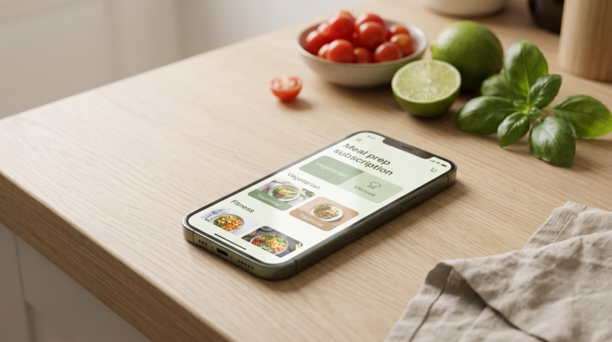
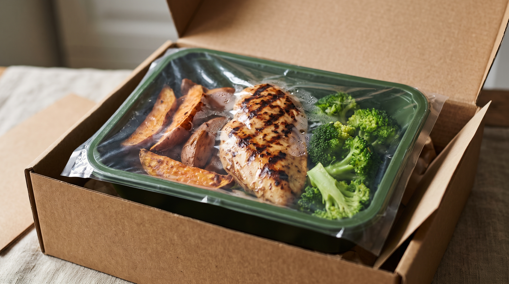
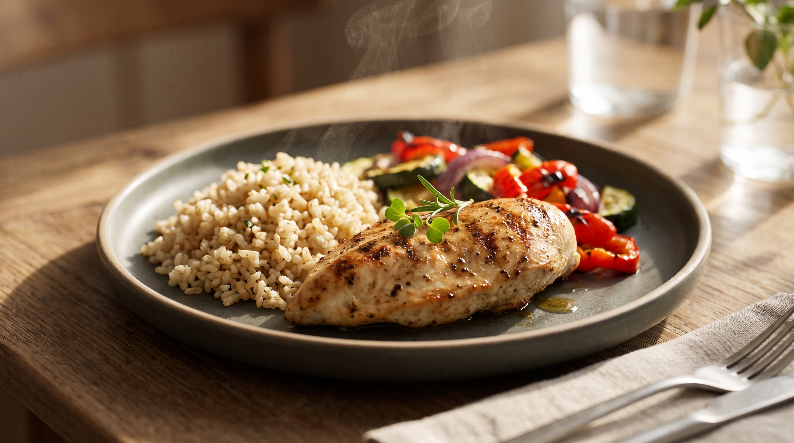
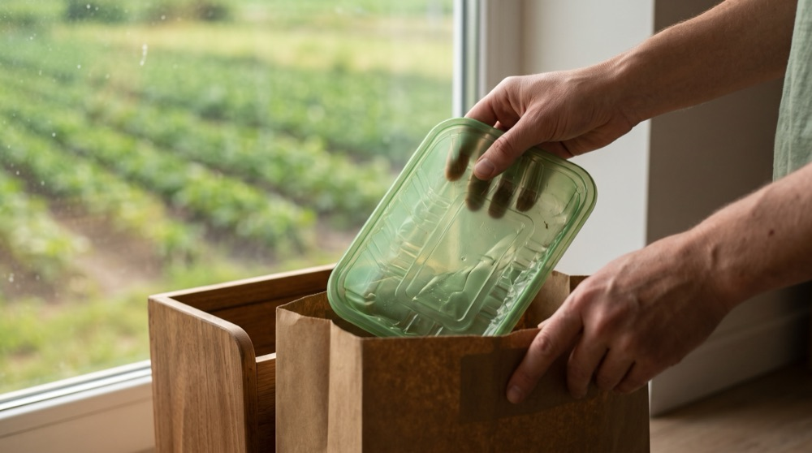

Alimentação biológica saudável no Porto, sem perder tempo na cozinha.
Marmitas biológicas equilibradas e prontas a aquecer em 3 minutos, preparadas com ingredientes de produtores locais do Norte e entregues semanalmente à sua porta no Grande Porto. Embalagens 100% compostáveis com recolha circular incluída.


O que torna as nossas marmitas únicas?
Unimos nutrição consciente, conveniência diária e respeito rigoroso pelo meio ambiente.
Ingredientes 100% Biológicos
Fornecidos exclusivamente por produtores parceiros identificados (Quinta da Serra, Horta do Vale e Sabor do Campo), sem pesticidas sintéticos nem aditivos artificiais.
Entrega Agendada à Medida
Horário, dia e morada combinados de acordo com a conveniência do cliente no Grande Porto (domicílio ou trabalho), com ajuste livre até 48h antes da entrega.
Embalagens Circulares
Bioplástico vegetal 100% compostável (EN 13432). A devolução não é obrigatória: incentivamos a economia circular recolhendo-as gratuitamente na entrega seguinte para compostagem.
Pronto em 3 Minutos
Refeições de 400 a 550 kcal desenhadas para manter saciedade e energia estável, com durabilidade de 7 dias no frigorífico (2°C a 4°C).
Como Funciona a Sua Subscrição
Em 4 passos simples, garante refeições biológicas frescas em casa ou no escritório, com total comodidade e respeito pelo planeta.

Escolha o Seu Plano
Selecione o plano ideal (Individual, Casal ou Família) e personalize os pratos da semana na loja online até 48 horas antes da entrega.

Receba Onde Quiser
Entregamos no domicílio ou no local de trabalho em todo o Grande Porto, em carrinha refrigerada, no dia e janela horária da sua conveniência.

Aqueça 3 Minutos
Aqueça diretamente 3 minutos no micro-ondas. Desfrute de uma refeição equilibrada, rica em nutrientes e sem panelas para lavar.

Devolução Circular
A devolução não é obrigatória: incentivamos a sustentabilidade recolhendo gratuitamente os recipientes limpos para compostagem industrial, ou pode compostá-los em casa.
Compromissos Reais e Limites do Serviço
Exclusiva para os concelhos de Porto, Matosinhos, Gaia, Maia e Gondomar.
Pausar, alterar pratos ou cancelar com 48 horas de antecedência, sem penalizações.
Frescura garantida durante 7 dias em frio (2°C a 4°C) por selagem a vácuo.
Recolha gratuita de embalagens para compostagem, sem custos nem obrigatoriedade.
"Ganhei mais de 5 horas por semana para brincar com a minha filha e deixei de encomendar fast-food por cansaço!"
Como a Mariana simplificou a rotina e começou a comer melhor
Aos 34 anos, a Mariana concilia dias intensos de trabalho em regime híbrido com o cuidado da sua filha Matilde, de 4 anos. O dilema das refeições semanais gerava ansiedade constante: faltava tempo para ir ao supermercado biológico e a cozinha no fim do dia era um teste à paciência.
A Escolha Mais Saudável e Consciente
Veja como nos diferenciamos das opções tradicionais de refeições prontas e marmitas de distribuição nacional.
| Vantagem Competitiva | 🌱 BioMarmita (Grande Porto) | 📦 Serviços Tradicionais / Concorrência Nacional |
|---|---|---|
| Origem dos Ingredientes | ✓ 100% Biológico Certificado, cultivado em quintas locais parceiras do Norte de Portugal. | ✗ Ingredientes de agricultura convencional; sem garantia nem certificação de cultivo biológico. |
| Embalagens & Impacto Ecológico | ✓ Bioplástico 100% Compostável (EN 13432), com recolha gratuita de embalagens para incentivo à economia circular (ou compostagem em casa). | ✗ Plástico fóssil comum (R-PET) para descarte no ecoponto amarelo, gerando resíduos plásticos domésticos. |
| Flexibilidade de Entregas | ✓ Agendamento Personalizado no Grande Porto: entrega combinada no domicílio ou local de trabalho com horário flexível. | ✗ Janelas rígidas de transportadoras gerais de mercadorias, sem flexibilidade de horário específico. |
| Rastreabilidade dos Produtores | ✓ Totalmente Transparente: sabe o nome da quinta onde o legume foi colhido (Quinta da Serra, Horta do Vale, etc.). | ✗ Fornecedores e distribuidores industriais em grande escala, sem ligação aos pequenos produtores. |
| Circuito de Distribuição (Km 0) | ✓ Circuito Curto (< 50 km), confeção artesanal no Porto com mínima pegada carbónica. | ✗ Logística centralizada de longo curso para todo o país, gerando elevada pegada de carbono. |
| Conservação & Tecnologia a Vácuo | ✓ Selagem hermética a vácuo (atmosfera protetora): mantém textura, frescura e sabor autêntico até 7 dias no frigorífico sem recorrer a qualquer conservante ou congelamento. | ✗ Sem vácuo (selagem comum): maior oxidação dos alimentos, perda rápida de frescura ou necessidade de conservantes químicos e descongelação. |
| Rapidez no Dia a Dia | ✓ Pronto em 3 minutos no micro-ondas, diretamente do frigorífico para o prato (sem necessidade de descongelar). | ✓ Pronto em 3 minutos (ou mais tempo se necessitar de descongelação prévia). |
Pronto para comer melhor e simplificar a sua rotina?
Experimente a primeira semana com 15% de desconto e sinta a diferença de uma alimentação genuinamente biológica e portuguesa.
Subscrever a Minha Marmita